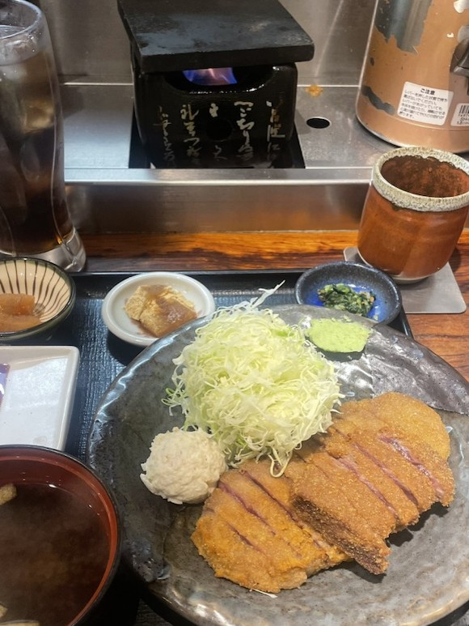
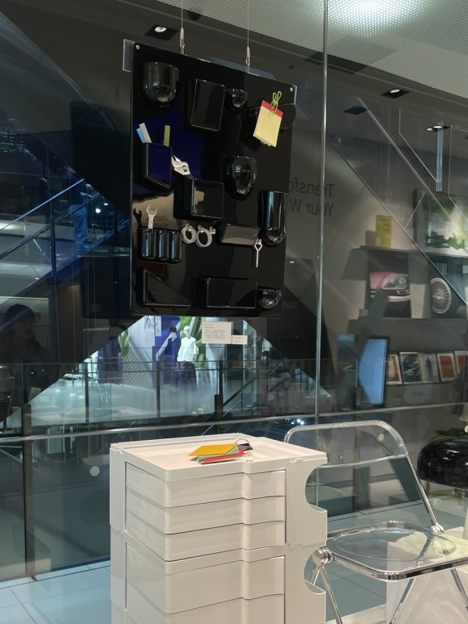

Central Asia , Tokyo
비슷한 듯 다른 도쿄
서울과 비슷한 듯 다른 도쿄만의 매력. 처음으로 혼자 간 해외여행지로, 혼여하기에도 좋은 것 같다
1) 도쿄타워
에펠탑의 설렘을 잠깐이라도 느낄 수 있는 곳
2) 나카메구로
중심지에서 약간 왼쪽에 위치한 동네로 한남동같은
느낌이 든다
3) 아키하바라
쇼핑도 맛집도 질렸다면 한 번쯤은 가보는 것을
추천...한다
4) 스크램블 교차로
교차로 근처에 있는 스타벅스에 들어가서
보고 있으면 힐링된다

1) 알리야 카페
맛없음 비추
2) 신우동
맛있지만 3시간 이상 웨이팅이라면 비추
3) 모토무라규카츠
예전만큼은 아니지만 여전히 맛있다
4) 어딘지 모를 오마카세
서울만큼 경쟁력이 세서 저렴한 가격으로 즐길 수 있다
* 시소를 쓰는 집은 피하는 걸 추천

오모테산도에 위치한 MOMA
MOMA에 전시된 작품을 활용한 굿즈부터 유명 퍼니처까지
다양한 제품이 있어머물러 있기 좋다